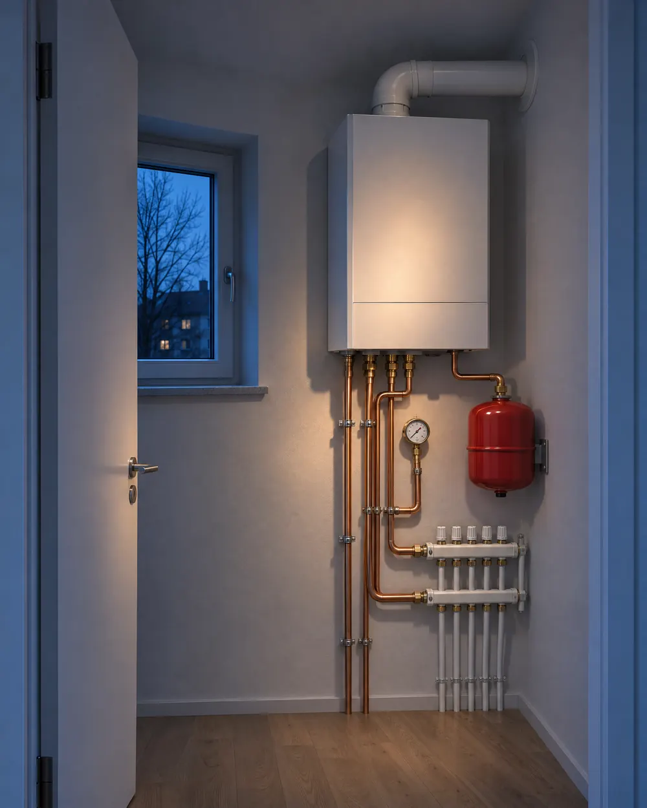
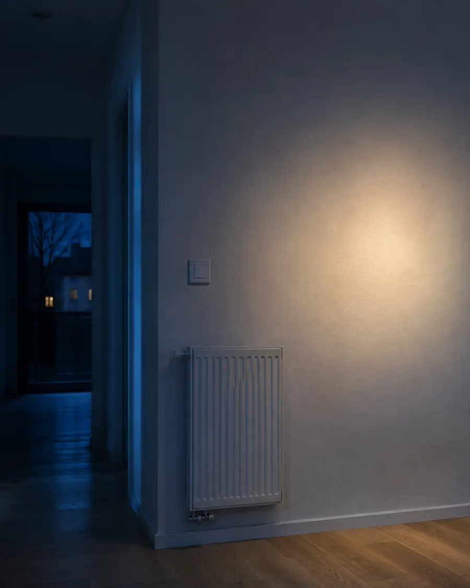
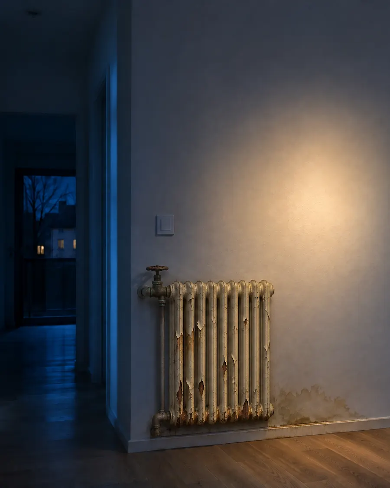

Accueil / Chauffage
Radiateur froid ? On remet la chaleur.
Chaudière gaz ou fioul en panne, radiateurs froids, entretien annuel, pompe à chaleur. Avec le code d'erreur et une photo, on vient avec la bonne pièce.
Ce que la lampe a trouvé
Chaud en bas, froid en haut : de l'air est bloqué dans le radiateur.
- Regardez la pression de la chaudière : entre 1 et 2 bars à froid, en général.
- Notez le code d'erreur affiché s'il y en a un, et prenez l'écran en photo.
- Radiateur froid en haut seulement : une purge suffit souvent, on vous guide au téléphone.

On décroche de 7 h à 22 h, 7 jours sur 7
Prix du déplacement annoncé au téléphone
Devis écrit avant tout travaux
Lisez votre manomètre
Le petit cadran rond sur ou sous la chaudière. Réglez le curseur sur ce qu'il affiche : on vous dit si c'est la pression, et quoi faire.
Votre pression
Ce qu'on fait
Dépannage le jour même
Prix du déplacement annoncé au téléphone.
- Chaudière en panne
- Diagnostic, code d'erreur, remplacement de la pièce.
- Radiateurs froids
- Purge, équilibrage, vanne thermostatique bloquée.
- Plus d'eau chaude
- Côté chaudière ou ballon, on trouve lequel.
- Fuite sur le circuit
- Pression qui baisse, soupape qui coule.
Travaux sur devis
Devis écrit et gratuit, avant de commencer.
- Entretien annuel
- Nettoyage, réglage, attestation pour l'assurance.
- Remplacement de chaudière
- Chaudière murale à condensation, reprise de l'ancienne.
- Pompe à chaleur
- Étude, pose, raccordement au circuit existant.
- Thermostat connecté
- Pose et réglage, pilotage depuis le téléphone.
Avant, après.
Le vieux radiateur en fonte qui rouillait remplacé par un radiateur à panneaux, vanne thermostatique comprise. Glissez la barre pour comparer. Photos d'illustration : sur votre site, ce sont vos chantiers.


Les questions qu'on nous pose
Quel code d'erreur dois-je noter ?
Celui qui s'affiche à l'écran de la chaudière, lettres et chiffres. Prenez aussi en photo la plaque de la chaudière : la marque et le modèle nous disent quelle pièce prendre.
L'entretien annuel est-il obligatoire ?
Il est vivement recommandé et souvent exigé par l'assureur ou le bail. Une chaudière entretenue consomme moins et tombe moins en panne.
Vous intervenez sur toutes les marques ?
Sur les marques courantes au Luxembourg. Si la pièce doit être commandée, on vous le dit au téléphone avec le délai.
Ça vaut le coup de passer à la pompe à chaleur ?
Ça dépend de l'isolation et des radiateurs. On vient voir, on vous dit franchement si c'est adapté à votre maison.